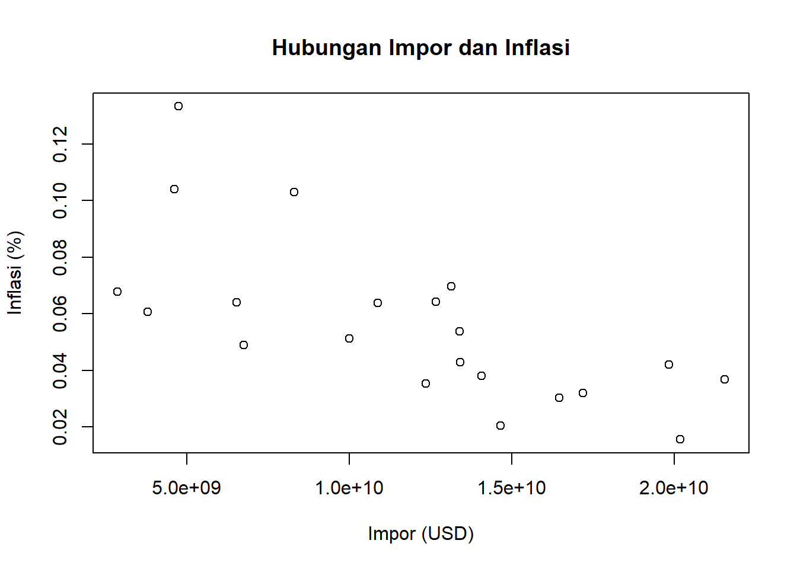
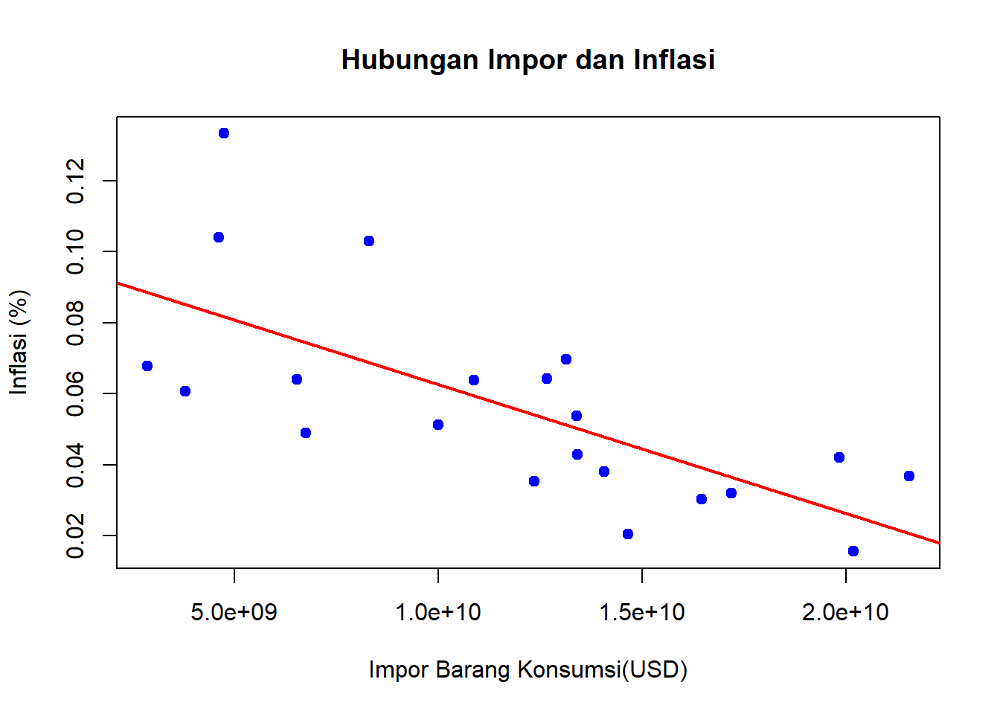

library(readxl)
library(zoo)
Attaching package: 'zoo'The following objects are masked from 'package:base':
as.Date, as.Date.numericlibrary(lmtest)Metode Penelitian Politeknik APP Jakarta

Aktivitas impor suatu negara dapat membantu memenuhi kebutuhan masyarakat yang di dalam negerinya tidak mampu terpenuhi, sehingga adanya aktivitas perdagangan internasional. peningkatan impor barang juga berpengaruh terhadap inflasi. terdapat hubungan stabilitas keseimbangan jangka panjang dan pergerakan jangka panjang. Inflasi yang tinggi dapat dipengaruhi oleh beberapa faktor, salah satunya peningkatan impor barang konsumsi karena dapat menyebabkan lonjakan harga domestik. Impor barang konsumsi mencangkup barang-barang seperti makanan, pakaian, barang elektronik, dan sebagainya yang di gunakan oleh masyarakat. Ketika impor barang konsumsi meningkat maka terjadi penurunan pada harga barang domestik, tetapi juga dapat meningkatkan tekanan inflasi jika biaya impor naik akibat fluktuasi nilai tukar atau kenaikan harga barang di luar negari.
Ruang lingkup pembahasan masalah sesuai data yang akan digunakan untuk analisis pengaruh impor barang konsumsi terhadap inflasi di Indonesia dalam batasan waktu antara tahun 2003-2023. penelitian ini mencangkup barang konsumsi yang di impor ke Indonesia dan tingkat inflasi di Indonesia. Data impor barang konsumsi akan di analisis dalam satuan USD dan tingkat inflasi tahunan yang diukur dalam bentuk persentase.
Penelitian ini bertujuan untuk menganalisis pengaruh impor barang konsumsi terhadap inflasi di Indonesia periode 2003-2023 serta mencari hubungan signifikan antara keduanya. manfaat penelitan :
Bagi Akademisi
Menambah wawasan dan referensi pada studi ekonomi khususnya pada bidang inflasi dan impor.
Bagi Industri
Memberikan informasi untuk strategi bisnis dalam menghadapi inflasi dan ketergantungan produk impor.
Bagi Pemerintah
Membantu pemerintah dalam merumuskan kebijakan ekonomi untuk mengendalikan inflasi dan mengelola perdagangan internasional.
library(readxl)
library(zoo)
Attaching package: 'zoo'The following objects are masked from 'package:base':
as.Date, as.Date.numericlibrary(lmtest)Pada teori inflasi dijelaskan bahwa inflasi terjadi karena jumlah uang yang beredar tidak seimbang dengan barang yang tersedia (teori kuantitatif uang) dan masyarakat ingin berada di luar batas kemampuan ekonominya (teori keynes). (Rudy & Indah , 2020)
Suatu negara melakukan impor juga dikarenakan terdapat keunggulan mutlak pada negara lain yang dikemukakan oleh Adam Smith dalam Theory of Absolute Advantage (teori keunggulan mutlak). Teori ini menjelakan suata negara disebut memiliki keunggulan mutlak dibandingkan dengan negara lain apabila negara tersebut dapat memproduksi barang atau jasa yang tidak dapat diproduksi negara lain. (Nadila & Nuri, 2022)
Kegiatan impor dapat berdampak pada inflasi dalam negeri secara langsung melalui harga impor. Kenaikan harga impor akan mempengaruhi harga dalam negeri baik barang impor tersebut digunakan sebagai produk akhir maupun bahan baku untuk menghasilkan produk akhir. tetapi pada studi yang dilakukan oleh Naseem (2018), Ulke dan Ergun (2011) menyatakan bahwa impor dan inflasi memiliki pengaruh yang signifikan. impor barang dan jasa memiliki pengasuh penting dalam menentukan inflasi. (Dea & Inayati, 2022)
| No | Tahun | Nilai Impor Barang Konsumsi (USD) | Inflasi (%) |
|---|---|---|---|
| 1 | 2003 | $ 2.862.800.000 | 6,79% |
| 2 | 2004 | $ 3.786.500.000 | 6,06% |
| 3 | 2005 | $ 4.620.500.000 | 10,4% |
| 4 | 2006 | $ 4.738.200.000 | 13,33% |
| 5 | 2007 | $ 6.539.100.000 | 6,4% |
| 6 | 2008 | $ 8.303.700.000 | 10,31% |
| 7 | 2009 | $ 6.752.600.000 | 4,9% |
| 8 | 2010 | $ 9.991.600.000 | 5,13% |
| 9 | 2011 | $ 13.392.900.000 | 5,38% |
| 10 | 2012 | $ 13.408.600.000 | 4,28% |
| 11 | 2013 | $ 13.138.900.000 | 6,97% |
| 12 | 2014 | $ 12.667.200.000 | 6,42% |
| 13 | 2015 | $ 10.876.500.000 | 6,38% |
| 14 | 2016 | $ 12.351.700.000 | 3,53% |
| 15 | 2017 | $ 14.075.100.000 | 3,81% |
| 16 | 2018 | $ 17.181.300.000 | 3,2% |
| 17 | 2019 | $ 16.454.600.000 | 3,03% |
| 18 | 2020 | $ 14.655.700.000 | 2,04% |
| 19 | 2021 | $ 20.182.800.000 | 1,56% |
| 20 | 2022 | $ 19.832.400.000 | 4,21% |
| 21 | 2023 | $ 21.546.900.000 | 3,69% |
Penelitian ini menggunakan data dengan bentuk Time Series tahun 2003-2023. Data nilai impor barang konsumsi (X) di dapatkan dari Badan Pusat Statistik (BPS) dalam satuan dolar AS (USD) dan data tingkat inflasi tahunan (Y) diperoleh dari Bank Indonesia dalam bentuk presentase (%).
library(readxl)
data<-read_excel('data.xlsx')
head(data)# A tibble: 6 × 3
Tahun x y
<dbl> <dbl> <dbl>
1 2003 2862800000 0.0679
2 2004 3786500000 0.0606
3 2005 4620500000 0.104
4 2006 4738200000 0.133
5 2007 6539100000 0.064
6 2008 8303700000 0.103 plot(data$x, data$y, main="Hubungan Impor dan Inflasi", xlab="Impor (USD)", ylab="Inflasi (%)")
Metode yang saya pilih pada penelitian ini adalah analisis linier sederhana. Metode ini digunakan pada penelitian ini bermaksud untuk melihat hubungan antara satu variabel independen (impor barang konsumsi) dengan satu variabel dependen (inflasi). Spesifikasi yang dilakukan adalah:
\[ y_{t}=\beta_0 + \beta_1 x_t+\epsilon_t \] di mana \(y_t\) adalah tingkat inflasi dan \(x_t\) adalah nilai impor barang konsumsi.
| Variabel | Koefisien (Estimate) | Std. Error | t-value | Prob (p-value) |
|---|---|---|---|---|
| Intercept | 0.09893 | 0.01110 | 8.916 | 3.23e-08 |
| x (Impor) | -3.636e-12 | 8.558e-13 | -4.248 | 0.000435 |
Dari hasil analisis regresi, ditemukan bahwa impor barang konsumsi memiliki hubungan yang signifikan. dari Nilai p-value untuk koefisien impor barang konsumsi lebih kecil dari tingkat signifikansi 0.05, yang menunjukkan bahwa variabe impor memiliki pengaruh yang signifikan terhadap inflasi. Nilai R-Squared sebesar 0.4872 mengindikasi bahwa sekitar 48,72% variasi inflasi dapat dijelaskan oleh variasi dalam impor barang konsumsi. Dengan begitu hal ini menunjukkan adanya hubungan yang cukup signifikan, meskipun ada hal lain yang mempengaruhi inflasi.
plot(data$x, data$y, main = "Hubungan Impor dan Inflasi", xlab = "Impor Barang Konsumsi(USD)", ylab = "Inflasi (%)", pch=19, col="blue")
abline(lm(y~x, data = data), col="red",lwd=2)
Berdasarkan hasil regresi, persamaan regresi linear sederhana dapat ditulis sebagai berikut :
\[ y_{t}= 0.09893 - 3.636 \times 10^{-12}x_t + \epsilon_t \]
model<-lm(y~x, data = data)
summary(model)
Call:
lm(formula = y ~ x, data = data)
Residuals:
Min 1Q Median 3Q Max
-0.02538 -0.01130 -0.00738 0.01527 0.05160
Coefficients:
Estimate Std. Error t value Pr(>|t|)
(Intercept) 9.893e-02 1.110e-02 8.916 3.23e-08 ***
x -3.636e-12 8.558e-13 -4.248 0.000435 ***
---
Signif. codes: 0 '***' 0.001 '**' 0.01 '*' 0.05 '.' 0.1 ' ' 1
Residual standard error: 0.02125 on 19 degrees of freedom
Multiple R-squared: 0.4872, Adjusted R-squared: 0.4602
F-statistic: 18.05 on 1 and 19 DF, p-value: 0.0004347shapiro.test(resid(model))
Shapiro-Wilk normality test
data: resid(model)
W = 0.92709, p-value = 0.1203library(zoo)
library(lmtest)
bptest(model)
studentized Breusch-Pagan test
data: model
BP = 4.4588, df = 1, p-value = 0.03472Dari analisis yang telah saya lakukan, dapat di ambil kesimpulan bahwa impor barang konsumsi berpengaruh terhadap tingkat inflasi di Indonesia. Persamaan regresi yang terbentuk menunjukkan bahwa setiap kenaikan impor barang konsumsi dapat dihubungkan dengan perubahan pada tingkat inflasi, meskipun hubungannya tidak sepenuhnya kuat.
Secara keseluruhan impor barang konsumsi dengan laju inflasi memiliki hubungan yang signifikan. Dari hal tersebut menyatakan bahwa perubahan dalam pola impor dapat berkontribusi terhadap fluktuasi inflasi di Indonesia. Oleh karena itu, kebijakan yang berkaitan dengan impor dan pengelolaan inflasi perlu mempertimbangkan faktor-faktor ini agar dapat menjaga stabilitas ekonomi.
Badan Pusat Statistik . (2024, Maret 14). Impor Barang Konsumsi, 1989-2023. Retrieved from Badan Pusat Statistik : https://www.bps.go.id/id/statistics-table/1/MTA0MCMx/impor-barang-konsumsi–1989-2023.html
Bank Indonesia. (n.d.). Data Inflasi . Retrieved from Bank Indonesia : https://www.bi.go.id/id/statistik/indikator/data-inflasi.aspx
Dea , A., & Inayati, N. D. (2022). Variabel-variabel yang Mempengaruhi Inflasi di Indonesia. Jurnal Ekonomi Pembangunan (JEP), 2721-6071.
Nadila , S. A., & Nuri, A. (2022). Analisis Kebijakan Perdagangan Internasional. Journal Economy And Currency Study (JECS).
Rudy , S., & Indah , P. (2020). PENGARUH INFLASI DAN PERTUMBUHAN EKONOMI TERHADAP. Journal of Applied Business and Economics, 271-278.